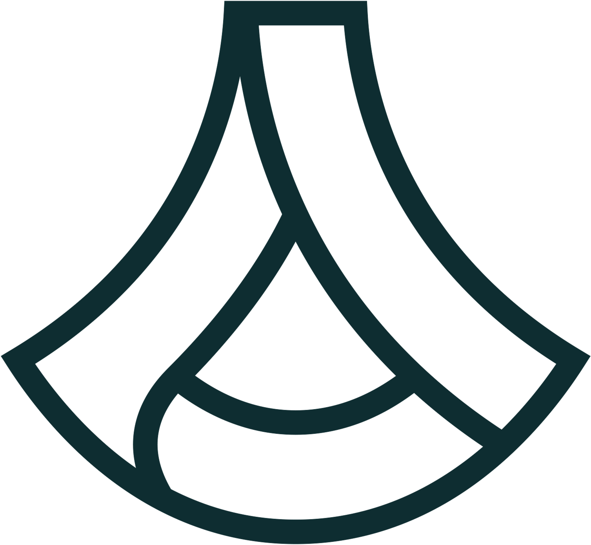
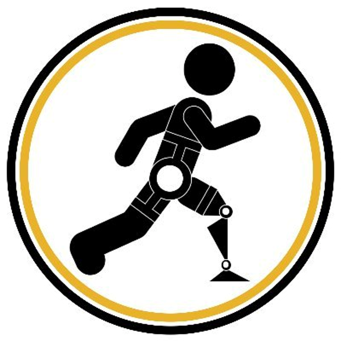
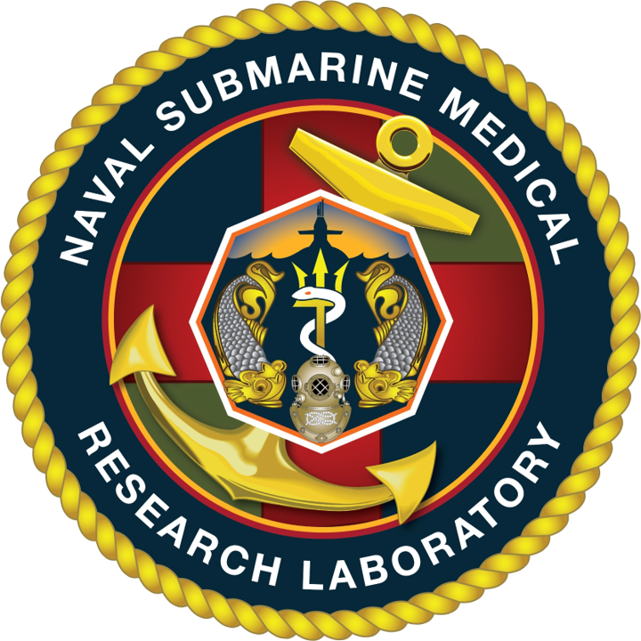

Experience
Education

Georgia Institute of Technology
Master of Science in Computer Science
Aug 2022 - Dec 2023
Specialization in Machine Learning
GPA: 4.00/4.00
CS 7641 Machine Learning
Graduate Teaching Assistant | Fall 2022, Spring 2023
Georgia Institute of Technology
Bachelor of Science in Mechanical Engineering
Aug 2018 - May 2022
Minor in Computer Science
GPA: 3.98/4.00
CS 4641 Machine Learning
Undergraduate Teaching Assistant | Spring 2022
ME 3340 Fluid Dynamics
Undergraduate Teaching Assistant | Fall 2020
Georgia Tech Europe
Resident Assistant | Summer 2019
Glastonbury High School
High School Diploma
Aug 2014 - May 2018
Valedictorian
GPA: 4.00/4.00
Professional
MIT Lincoln Laboratory
Research Intern
May 2023 - Present
- Developing AI/ML and robotics solutions for search-and-rescue operations

BMW
Machine Learning Intern
May 2022 - Aug 2022
- Built a Python pipeline in AWS to train OpenAI’s 175B-parameter Large Language Model (LLM) called GPT-3 that automatically classifies business documents, saving $500k and achieving 98% accuracy (+30% versus existing methods)
- Created Python scripts with AWS Textract and AWS Translate to extract text from 500+ German PDF documents for model training
- Developed the backend and API for Meta AI's 66B-parameter LLM called OPT to be used on-premises, enabling processing of confidential data
Raytheon
Research and Development Intern
May 2021 - Aug 2021
- Developed the user interface, state machine transition logic, and PID temperature control in LabVIEW for mechanically testing airplane engine parts, resulting in a system that operated continuously and autonomously for 500+ hours
- Automated 3D modeling processes to generate CAD renders, reducing time spent on modeling by 80% from 10 to 2 weeks

Anduril
Research and Development Intern
Jan 2021 - May 2021
- Engineered a new testing program for the next generation of drone and launcher systems to attain a 330% increase in launch energy, creating the Solidworks design, plan for manufacture and assembly, data collection system, and testing procedures
- Designed and managed a MS Access database to track customer requirements on a $1M+ government contract
Research
CORE Robotics Laboratory
Graduate Research Assistant
Aug 2022 - Present
- Published an IEEE conference paper with a team of 10+ students presenting development of a tennis-playing wheelchair robot used to better understand human-robot collaboration in the context of sports
- Developing Robot Operating System (ROS) packages in C++ for a camera system to triangulate the position of a tennis ball in real-time using NVIDIA Jetsons (Linux distributed computing devices), resulting in 1.5X quality and 2X framerate of video data over existing systems to ultimately improve the tennis ball return rate of the robot
- Creating a deep learning model using PyTorch to predict the state of a quadcopter from control inputs and sensor data in real-time, enabling the quadcopter to continue stable flight even when it is damaged and flight dynamics are altered
Georgia Tech Research Institute
Research and Development Intern
Jul 2020 - Aug 2020
- Contributed to a research paper analyzing bio-inspired, slip-resistant materials for gloves, robotic traction, shoe soles, etc. by generating mechanical software models in ANSYS simulating animal traction on wet surfaces
- Researched novel computational techniques to simulate 3 key behaviors to understand water evacuation under animal paws

EPIC Laboratory
Undergraduate Research Assistant
Jan 2019 - May 2019
- Conducted trial investigations on a hip exoskeleton to troubleshoot stepper motor performance and perform study on timing of exoskeleton assistance during the user’s walking gait on ramps and stairs of varying steepness at varying speeds
- Modeled exoskeleton parts to assist in the development of a 20% more compact design

Naval Submarine Medical Research Laboratory
Research and Development Intern
May 2017 - Aug 2017
- Prototyped a remote-controlled, Ø2ft X 6ft blimp contributing to research in a novel concept in lighter-than-air surveillance
- Developed a new method for manufacturing an air-tight blimp envelope from thick metalized polymer film